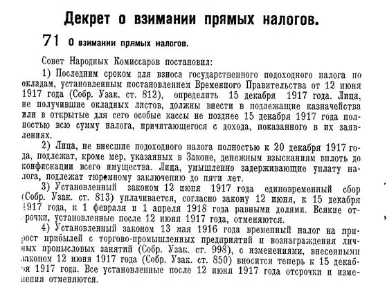
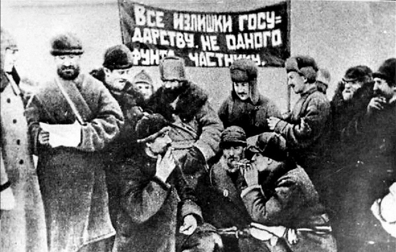
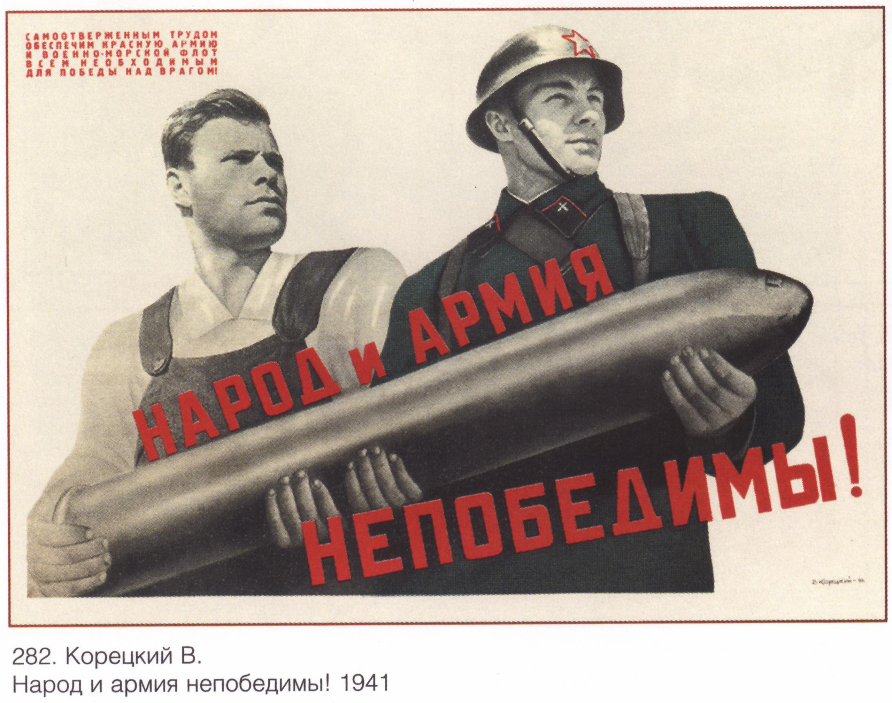
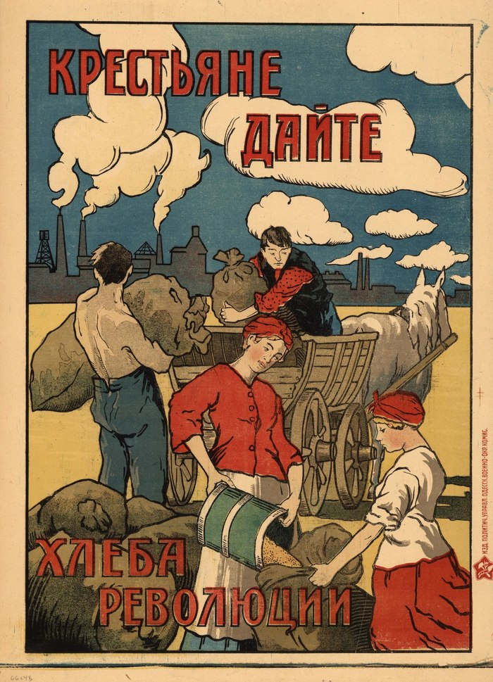
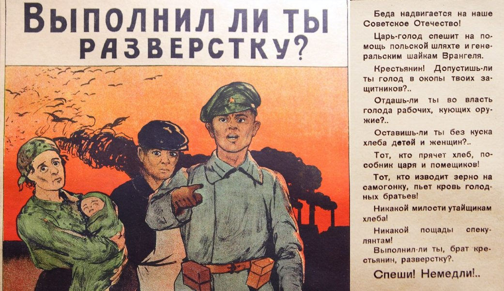

Налоги в Советской России 1917-1922 гг. период военного коммунизма

Одним из первых налоговых мероприятий после Октябрьской революции является Декрет Совета Народных Комиссаров от 24 ноября 1917 г. о взимании прямых налогов, устанавливавший налог на прирост прибылей с торговых и промышленных предприятий и доходов от личных промыслов. Декретом предусматривались твердые сроки уплаты налога и жесткие санкции за просрочку платежей или неуплату налога.
В 1918—1919 гг. неоднократно ставился вопрос об уменьшении чрезвычайного революционного налога с крестьян среднего и ниже среднего достатка.
Одним из основных источников доходов местных бюджетов был разовый сбор за торговлю. Местным Советам предоставлялось право взимать в городских поселениях местный разовый сбор за подвижную торговлю с лиц, производящих не облагаемую промысловым налогом продажу товаров вразнос или вразвоз, а также сбор за продажу скота на рынке.
После Октябрьской революции 1917 г. существенно повышаются ставки акцизов на предметы массового потребления. Сборщиками акцизов выступали собственники предприятий, производящих облагаемые товары или услуги, а его плательщиками — потребители при оплате товаров или услуг. В конце 1918 г. вместо ранее действовавших акцизов вводятся прямые начисления к ценам товаров, однако их значение для бюджета резко снизилось в результате натурализации хозяйства.
Разновидностью обложения по обороту (косвенный налог) был особый пятипроцентный сбор. Официально целью введения сбора объявлялось содействие всеобщему кооперированию населения. Сбор взимался с кооперативных и частных торговых предприятий, а также отдельных лиц, снабжающих население предметами личного потребления и домашнего обихода, в размере 5% их оборота.


14 августа 1918 г. вводится единовременный сбор на обеспечение семей красноармейцев, представлявший собой разновидность целевого налога, введенного взамен контрибуций. Поступления от этого сбора зачислялись в фонд обеспечения семей красноармейцев. Плательщиками сбора являлись владельцы частных торгово-промышленных предприятий, имевших наемных рабочих и работниц. Размер сбора определялся на основании расчета и данных ведомости установленной формы.

Натурализация хозяйственных отношений при резком сокращении товарооборота и огромном обесценении денег привели к значительному снижению финансовой эффективности налогов, взимаемых в денежной форме. Введение натурального налога не было осуществлено из-за усиления Гражданской войны и иностранной военной интервенции. Налогообложение сельских хозяев заменяется системой продразверстки, представлявшей собой способ заготовки сельскохозяйственных продуктов, применявшийся в Советской России до введения продналога, заключавшийся в обязательной сдаче крестьянскими хозяйствами государству всех излишков (сверх установленных минимальных запасов, необходимых для личных и хозяйственных нужд) хлеба и других сельскохозяйственных продуктов.

В период Гражданской войны 1918—1920 гг. продразверстка официально определялась как чрезвычайная мера, вызванная исключительно тяжелым военным и экономическим положением страны. Продразверстка была продолжением практики заготовки хлеба продотрядами и комитетами бедноты. Все количество хлеба и зернофуража, необходимых для удовлетворения общегосударственных потребностей, развёрстывалось на основе государственного планового задания между производящими губерниями, а затем между уездами, волостями, селами и крестьянскими хозяйствами. При этом учитывались посевные площади под отдельными сельскохозяйственными культурами, их урожайность, установленные государством нормы потребления сельскохозяйственных продуктов для сельского населения, а также потребности крестьянских хозяйств в семенах и фураже для скота.
Вначале продразверстка распространялась на хлеб и зернофураж; в заготовительную кампанию 1919—1920 гг. охватила также картофель, мясо, а к концу 1920 г. почти все сельскохозяйственные продукты. Продразверстка подлежала обязательному выполнению в установленные сроки. У хозяйств, не сдавших в срок поставки, обнаруженные излишки отчуждались. При проведении продразверстки строго соблюдался классовый принцип: максимально высокому обложению подвергались кулацкие хозяйства, меньшему — середняцкие, частично или полностью освобождались от продразверстки бедняки. Расчет с крестьянами за сданную продукцию производился немедленно деньгами по твердым ценам, что при быстром обесценении денег и отсутствии в продаже промышленных товаров практически означало конфискацию продукции и имущества.
В условиях натурализации хозяйства и резкого обесценения денег эффективность денежных налогов снизилась, в связи с чем в феврале 1921 г. их взимание было прекращено. В этот период широкое распространение получают натуральные повинности, налагаемые на население. В Советской России в период Гражданской войны и иностранной военной интервенции 1918—1922 гг. население привлекалось к поставке дров (дровяная повинность), к заготовке, погрузке и выгрузке всех видов топлива (трудовая повинность), к перевозке топливных, продовольственных и военных грузов. Впоследствии применение натуральных повинностей было ограничено. В годы гражданской войны национализация, натурализация заработной платы и другие меры, по существу, ликвидировали все местные доходы. В первые годы советской власти местные Советы вводили ряд хаотичных налогов: на граммофоны, на бобровые шапки и воротники, на выездных лошадей и т.п. Это создавало большие проблемы как самой советской власти, так и налогоплательщикам.